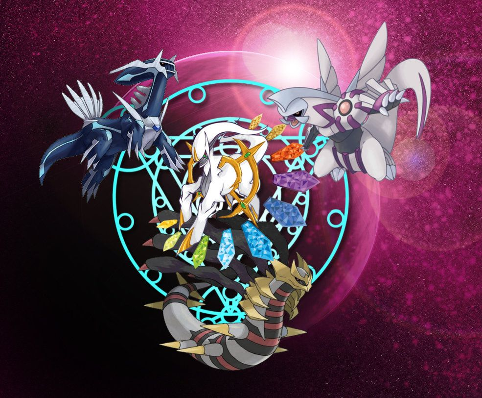
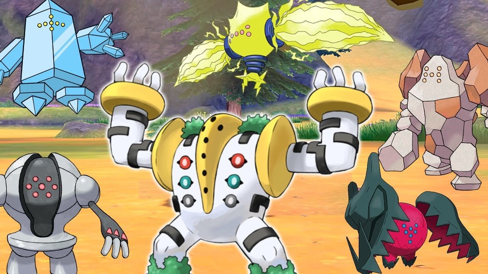

Below are the characters and their mythological, folkloric, and literary influences:
Legendary Bird Trio

- Articuno (The Roc and Anzu): Its design evokes the Roc, a gigantic bird from Arabic and Persian
mythology, and Anzu, a divine storm bird from Mesopotamian mythology. It also recalls the appearance
of sacred birds such as the Quetzal.
- Zapdos (The Thunderbird): Its concept is associated with the Thunderbird, a powerful supernatural
bird in the traditions of several Indigenous peoples of North America, believed to create thunder
through the movement of its wings and control storms.
- Moltres (The Phoenix and the Firebird): Its fiery appearance recalls the Phoenix, a mythical bird
associated with rebirth in Greek and Egyptian traditions, as well as the Zhar-ptitsa, the magical
Firebird from Slavic folklore.
Creation Trio

- Japanese Mythology: The creation of the Pokémon universe can be
compared to Japanese creation myths. Arceus evokes Ame-no-Minakanushi, a primordial deity, while
Dialga and Palkia recall Izanagi and Izanami, the divine siblings associated with the creation of
the Japanese islands and the ordering of the world.
- Greco-roman Mythology: Dialga, Palkia and Giratina represent time,
space, and antimatter, respectively. Their concepts evoke ancient ideas about cosmic forces and
primordial deities, including Chronos and Hades.
- Judeo-Christian Mythology: Giratina's banishment to the
Distortion World resembles the story of Lucifer, a powerful celestial being cast out of heaven. Its
six-legged design and fallen status reinforce this visual and thematic parallel.
- Japanese Folklore: Giratina's Origin Forme resembles the Ōmukade, a gigantic centipede-like yōkai
from Japanese folklore, traditionally portrayed as a dangerous creature capable of challenging
dragons.
Regis

- The Golem: The Regi Pokémon are inspired by the Golem of Jewish folklore, an artificial being
traditionally formed from clay and brought to life through sacred inscriptions. Their Braille-like
facial patterns reinforce this association.
- The Ages of Humanity: The different Titans represent materials and historical periods: Regirock
evokes the Stone Age, Regice the Ice Age, Registeel the Iron Age, Regieleki the modern age of
electricity, and Regidrago the mythical age of dragons.
- Norse Mythology and Greek Mythology:
Regigigas evokes the giants of Norse mythology, known as Jötnar, and the Titans of Greek mythology.
Its legendary strength and association with the movement of continents recall ancient creation myths
about the formation of the world.